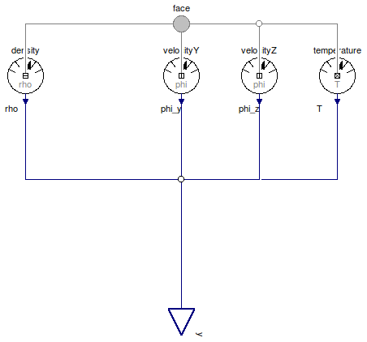
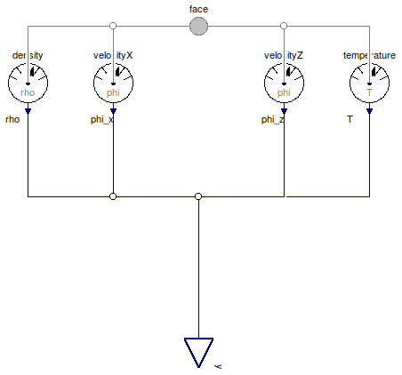
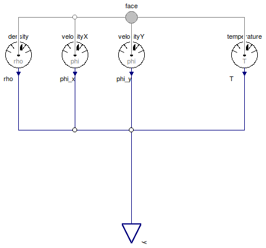
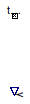

Table of Contents
- User's Guide
- BCs**
- Sensors
- Assemblies**
- Regions**
- Subregions
- Connectors
- Characteristics
- Units
- Quantities
- BaseClasses
- **Please check back soon or contact kdavies4 at gmail.com.
Download
- Latest: FCSys-2.0.zip (**Check back soon.)

| Name | Description |
|---|---|
| Sensor for a face of a Species model (single-species) | |
| Sensor for an x-axis face of a Species model (single-species) | |
| Sensor for a y-axis face of a Species model (single-species) | |
| Sensor for a z-axis face of a Species model (single-species) | |
| Density | Sensor for density |
| Velocity | Sensor for velocity |
| Temperature | Sensor for temperature |
| Base classes (not for direct use) |
 FCSys.Sensors.Face.Species
FCSys.Sensors.Face.Species

| Type | Name | Default | Description |
|---|---|---|---|
| ThermoOpt | thermoOpt | ThermoOpt.ClosedAdiabatic | Options for material and thermal subconnectors |
| Axis | axis | Axis normal to the face | |
| X-axis linear momentum | |||
| Boolean | inviscidX | true | Inviscid |
| Y-axis linear momentum | |||
| Boolean | inviscidY | true | Inviscid |
| Z-axis linear momentum | |||
| Boolean | inviscidZ | true | Inviscid |
| Type | Name | Description |
|---|---|---|
| RealOutputBus | y | Output bus for measurements |
| Face | face | Single-species connector for material, linear momentum, and heat |
model Species "Sensor for a face of a Species model (single-species)" extends BaseClasses.PartialSpecies; parameter Axis axis "Axis normal to the face"; // X-axis linear momentum parameter Boolean inviscidX=true "Inviscid"; // Note: Dymola 7.4 doesn't recognize enumerations in the dialog enable // option, e.g., // enable=axis <> Axis.x. // Therefore, the values of the enumerations are specified numerically.Velocity velocityX if axis <> Axis.x and not inviscidX "Type of sensor"; // Y-axis linear momentum parameter Boolean inviscidY=true "Inviscid";Velocity velocityY if axis <> Axis.y and not inviscidY "Type of sensor"; // Z-axis linear momentum parameter Boolean inviscidZ=true "Inviscid";Velocity velocityZ if axis <> Axis.z and not inviscidZ "Type of sensor"; FCSys.Connectors.Face face( final thermoOpt=thermoOpt, final inviscidX=inviscidX, final inviscidY=inviscidY, final inviscidZ=inviscidZ) "Single-species connector for material, linear momentum, and heat"; equation // Densityconnect(density.material, face.material); // X-axis velocityconnect(velocityX.mechanical, face.mechanicalX); connect(velocityX.y, y.phi_x); // Y-axis velocityconnect(velocityY.mechanical, face.mechanicalY); connect(velocityY.y, y.phi_y); // Z-axis velocityconnect(velocityZ.mechanical, face.mechanicalZ); connect(velocityZ.y, y.phi_z); // Temperatureconnect(temperature.thermal, face.thermal); end Species;
FCSys.Sensors.Face.SpeciesX
| Type | Name | Default | Description |
|---|---|---|---|
| ThermoOpt | thermoOpt | ThermoOpt.ClosedAdiabatic | Options for material and thermal subconnectors |
| Y-axis linear momentum | |||
| Boolean | inviscidY | true | Inviscid |
| Z-axis linear momentum | |||
| Boolean | inviscidZ | true | Inviscid |
| Type | Name | Description |
|---|---|---|
| RealOutputBus | y | Output bus for measurements |
| FaceX | face | Single-species connector for material, linear momentum, and heat |
model SpeciesX "Sensor for an x-axis face of a Species model (single-species)" extends BaseClasses.PartialSpecies; // Y-axis linear momentum parameter Boolean inviscidY=true "Inviscid";Velocity velocityY if not inviscidY "Type of sensor"; // Z-axis linear momentum parameter Boolean inviscidZ=true "Inviscid";Velocity velocityZ if not inviscidZ "Type of sensor"; FCSys.Connectors.FaceX face( final thermoOpt=thermoOpt, final inviscidY=inviscidY, final inviscidZ=inviscidZ) "Single-species connector for material, linear momentum, and heat"; equation // Densityconnect(density.material, face.material); // Y-axis velocityconnect(velocityY.mechanical, face.mechanicalY); connect(velocityY.y, y.phi_y); // Z-axis velocityconnect(velocityZ.mechanical, face.mechanicalZ); connect(velocityZ.y, y.phi_z); // Temperatureconnect(temperature.thermal, face.thermal); end SpeciesX;
FCSys.Sensors.Face.SpeciesY
| Type | Name | Default | Description |
|---|---|---|---|
| ThermoOpt | thermoOpt | ThermoOpt.ClosedAdiabatic | Options for material and thermal subconnectors |
| Z-axis linear momentum | |||
| Boolean | inviscidZ | true | Inviscid |
| X-axis linear momentum | |||
| Boolean | inviscidX | true | Inviscid |
| Type | Name | Description |
|---|---|---|
| RealOutputBus | y | Output bus for measurements |
| FaceY | face | Single-species connector for material, linear momentum, and heat |
model SpeciesY "Sensor for a y-axis face of a Species model (single-species)" extends BaseClasses.PartialSpecies; // Z-axis linear momentum parameter Boolean inviscidZ=true "Inviscid";Velocity velocityZ if not inviscidZ "Type of sensor"; // X-axis linear momentum parameter Boolean inviscidX=true "Inviscid";Velocity velocityX if not inviscidX "Type of sensor"; FCSys.Connectors.FaceY face( final thermoOpt=thermoOpt, final inviscidX=inviscidX, final inviscidZ=inviscidZ) "Single-species connector for material, linear momentum, and heat"; equation // Densityconnect(density.material, face.material); // Z-axis velocityconnect(velocityZ.mechanical, face.mechanicalZ); connect(velocityZ.y, y.phi_z); // X-axis velocityconnect(velocityX.mechanical, face.mechanicalX); connect(velocityX.y, y.phi_x); // Temperatureconnect(temperature.thermal, face.thermal); end SpeciesY;
FCSys.Sensors.Face.SpeciesZ
| Type | Name | Default | Description |
|---|---|---|---|
| ThermoOpt | thermoOpt | ThermoOpt.ClosedAdiabatic | Options for material and thermal subconnectors |
| X-axis linear momentum | |||
| Boolean | inviscidX | true | Inviscid |
| Y-axis linear momentum | |||
| Boolean | inviscidY | true | Inviscid |
| Type | Name | Description |
|---|---|---|
| RealOutputBus | y | Output bus for measurements |
| FaceZ | face | Single-species connector for material, linear momentum, and heat |
model SpeciesZ "Sensor for a z-axis face of a Species model (single-species)" extends BaseClasses.PartialSpecies; // X-axis linear momentum parameter Boolean inviscidX=true "Inviscid";Velocity velocityX if not inviscidX "Type of sensor"; // Y-axis linear momentum parameter Boolean inviscidY=true "Inviscid";Velocity velocityY if not inviscidY "Type of sensor"; FCSys.Connectors.FaceZ face( final thermoOpt=thermoOpt, final inviscidX=inviscidX, final inviscidY=inviscidY) "Single-species connector for material, linear momentum, and heat"; equation // Densityconnect(density.material, face.material); // X-axis velocityconnect(velocityX.mechanical, face.mechanicalX); connect(velocityX.y, y.phi_x); // Y-axis velocityconnect(velocityY.mechanical, face.mechanicalY); connect(velocityY.y, y.phi_y); // Temperatureconnect(temperature.thermal, face.thermal); end SpeciesZ;
| Type | Name | Description |
|---|---|---|
| Material | material |
model Density "Sensor for density" extends FCSys.Sensors.BaseClasses.PartialSensor(redeclare FCSys.Connectors.RealOutput y(final unit="N/l3"));FCSys.Connectors.Material material; equation y = material.rho; 0 = material.Ndot "Conservation of material (no storage)";end Density;
| Type | Name | Description |
|---|---|---|
| MechanicalTransport | mechanical | Mechanical subconnector |
model Velocity "Sensor for velocity" extends FCSys.Sensors.BaseClasses.PartialSensor(redeclare FCSys.Connectors.RealOutput y(final unit="l/T"));FCSys.Connectors.MechanicalTransport mechanical "Mechanical subconnector"; equation y = mechanical.phi "Measurement"; 0 = mechanical.mPhidot "Conservation of linear momentum (no storage)";end Velocity;

| Type | Name | Description |
|---|---|---|
| Thermal | thermal | Thermal subconnector |
model Temperature "Sensor for temperature" extends FCSys.Sensors.BaseClasses.PartialSensor(redeclare FCSys.Connectors.RealOutput y(final unit="l2.m/(N.T2)", displayUnit="K"));FCSys.Connectors.Thermal thermal "Thermal subconnector"; equation y = thermal.T "Measurement"; 0 = thermal.Qdot "Conservation of energy (no storage)";end Temperature;